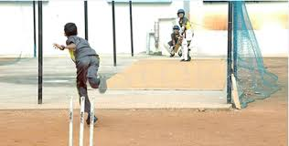

CHAMPS (Chrysalis High Amateur to Masters in Performall, gymnastics, Yoga, contemporary dance, Western music, theater and chess are offered to the students. Specialized coaches guide the children.ing Arts & Sports) program starts from Grade I. Activities like swimming, skating, basketball,cricket and games
There are also other special events that occur such as sports day and annual day